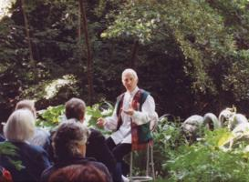

Einige Informationen zu meiner Person:

- Jahrgang 1937
- seit 1952 bis heute Sportlehrer in zwei Turnvereinen; Autor von Lehrbüchern (s.u.)
- seit 1972: dreißig Jahre lang Studienreisen rund um die Welt
- 1996 Ausbildung und spätere Abschlussprüfung zum Märchenerzähler in der Europäischen Märchengesellschaft
- seit 1998: Märchenerzähler für Menschen vom Kindergarten bis ins hohe Alter; auf Wunsch: Vorträge und Seminare zum Thema Märchen
- danach pensionierter Lehrer (Grund-, Haupt- und Realschulen sowie Gymnasium)
- seit 2002: Buchautor
als Märchenerzähler:
Titel: "Märchen hören und spielen" (Eigenverlag)
Kinder zwischen 4 und 12 Jahren sowie Senioren spielen pantomimisch zum Märchen des Erzählers. Das Buch umfasst acht bearbeitete Märchen der Welt mit vielen Fotos von den Aufführungen (18€).
als "Opa" eines ihm "zugelaufenen" achtjährigen Jungen ohne Vater und Großvater:
Titel: " … und warum bist du nicht mein Opa?" (Biografieverlag, ISBN 978-3-937772-22-6, 19,90€)
Diese biografische Erzählung berichtet von vielen Ereignissen - auf der Grundlage von acht DIN-A4 Tagebüchern - in der Freundschaft des Autoren mit einem zunächst achtjährigen Märchenfan.
als Sportlehrer in Schulen und Sportvereinen: (Eigenverlag)
Titel: "Sport - nicht nur - für Jungen in der Halle"
Jeder Band - (für Kinder von 6 - 8 Jahre, 9 - 11 Jahre, 12 - 15 Jahre) - enthält viele Stundenbilder mit Fotos und Zeichnungen als Anleitungen für Lehrer und Übungsleiter in Turnvereinen (15€, 19€, 15€)